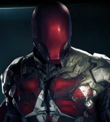

Capuz Vermelho
⠀Nome real: Jason Todd
⠀⠀Altura: 1.82
⠀⠀Peso: 90
⠀⠀Olhos: Azuis
⠀Cabelo: Preto
⠀⠀Parceiros: nenhum
História
Encontrado pelo Batman enquanto tentava roubar os pneus do Bat-móvel por não ter pais e por isso precisava de roubar carros para o desmanche. Batman o adotou e o treinou para repor Dick Grayson como o Robin. Jason percebeu que ele não compartilhava da gentileza de Dick e muito menos suas habilidades acrobáticas, a vida nas ruas fez sua vida ser muito dura. Frustrado pelo Batman não matar o Coringa ele começou a cometer vários crimes se tornando o capuz vermelho. Primeiramente como um anti-herói, mas depois se juntando a Batfamilia.